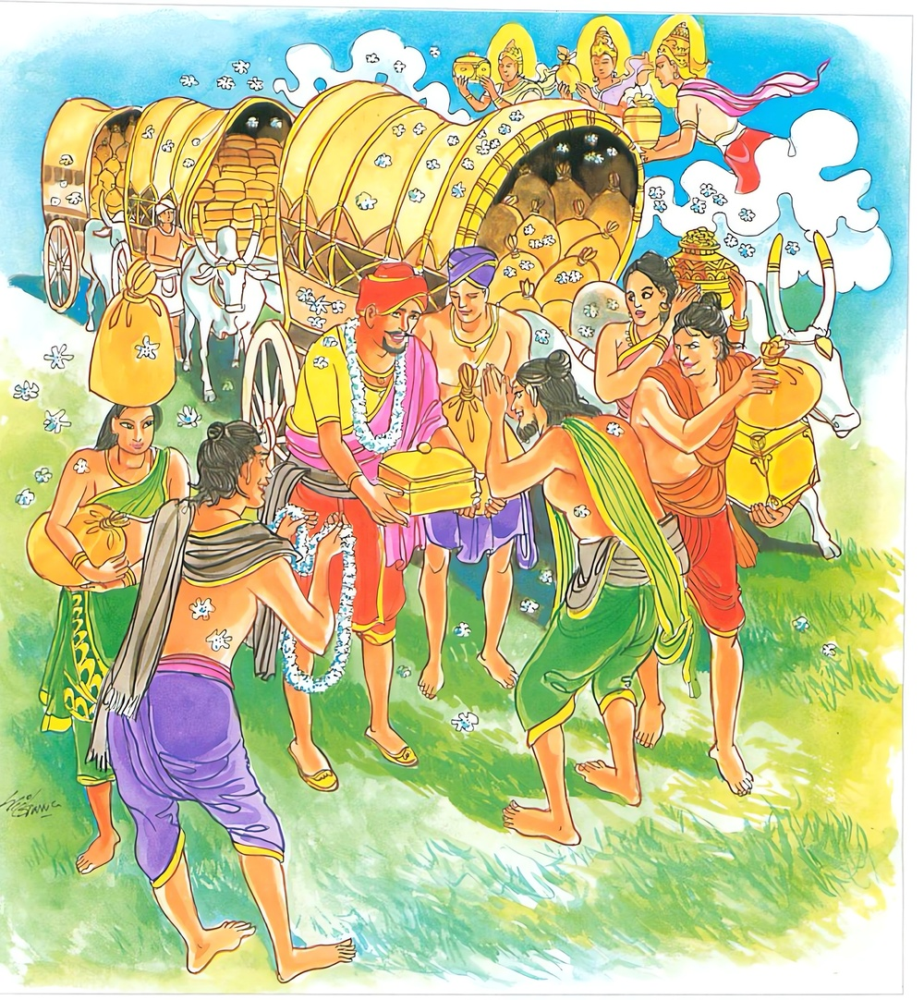

21-7 චිත්ත ගහපතියා
මෙම කතාව ධම්මපද අටුවාවෙන් ද කියවන්න.
සද්ධො සීලෙන සම්පන්නො යසොභොගසමප්පිතො
යං යං පදෙසං භජති තත්ථ තත්ථෙව පූජිතො.
(තෙරුවන් ඇදැහීම ලක්ෂණ කොට ඇත්තාවූ ද කම්පල ඇදැහීම ලක්ෂණ කොට ඇත්තාවූ ද) ලොවී ලොවුතුරු සැදැහැ ඇති, ගිහි ශීලයෙන් යුත් (පිරිවර ද ධනධාන්ය ද සත් ආර්ය ධන ද යන) විවිධ යසසින් හා භෝගසම්පතින් යුක්ත වූ කුලපුත්ර තෙම යම් යම් පෙදෙසක් භජනය කෙරේ ද (යම් යම් පෙදෙසකට එළැඹේ ද) ඒ ඒ සියලු තන්හි දී (දෙව්මිනිසුන් විසින්) මහත් ලාභසත්කාරයෙන් පුදනු ලදුයේ වන්නේ ය.

චිත්තගෘහපතිහු පිළිබඳ කථාවස්තුව මෙහි පංචමතරඞ්ගයෙහි “අසතං භාවනමිච්ඡෙය්ය” යනාදී ගාථාවර්ණනායෙහි ලා විස්තර විසින් කියන ලදි. ගාථාව පිළිබඳ පරිකථා ද එහි ම ආවා ය. මෙ තැන්හි අනඳ මහතෙරුන් විසින් “කිම; ස්වාමීනි! බුදුරජානන් වහන්සේ වෙත එත් ම මොහුට මේ මහාලාභසත්කාරය උපදින්නේ ද, නැතහොත් අන් තැන් හි යන කල්හිත් මේ උපදින්නේ දැ?”යි අසා සිටි කල්හි බුදුරජානන් වහන්සේ “ආනන්ද! මා වෙත ආවත්, අන් තැනක ගියත් මොහුට මේ ලාභසත්කාර ලැබෙන්නේ ය, මේ චිත්තගහපති ශ්රද්ධාවත් ය, තුනුරුවන්හි ප්රසන්න ය, සිල්වත් ය, මෙබන්දෙක් කොතැනක ගියේ ද, යම් යම් තැනක් සෙවුනේ ද, ඒ හැම තැන්හිදී ම ඔහුට මහත් සත්කාර ලැබෙන්නේ ය”යි වදාරා මේ ධර්මදේශනාව කළ සේක.
සද්ධො සීලෙක සම්පන්නො යසොභොගසමප්පිතො,
යං යං පදෙසං භජති තත්ථ තත්ථෙව පූජිතොති.
සැදැහැති ශීලයෙන් යුක්ත වූ යසසින් හා භෝගයෙන් ඔදවැඩි වූ පුද්ගල තෙමේ යම් යම් පෙදෙසක් සෙවුනේ ද, ඒ හැම තැන්හිදී ම පුදන ලද්දේ ය.
සද්ධො = සැදැහ ඇත්තේ ය.
ශ්රද්ධා නම්: තමන් හා එක් ව යෙදෙන අන්ය වූ චිත්ත - චෛතසිකධර්ම, අරමුණෙහි ලා පහද වන්නා වූ එකාන්තකුශලචෛතසිකයෙකි. මෝය ලෞකික - ලෝකෝත්තර විසින් දෙපරිදි වූවා. සෝවන් ඈ මග පල සිත්හි යෙදී නිවන් අරමුණෙහි සිත පහද වන්නී ලෝකෝත්තරශ්රද්ධා ය. ලෞකික සිත්වල යෙදී බුද්ධ - ධම්ම - සඞ්ඝ ගුණයෙහි සිත පහන් කරවමින් කම්පල අදහන්නී ලෞකිකශ්රද්ධා ය.
ඕ සම්පසාදන - සම්පක්ඛන්දන ලක්ෂණ ඇත්තී ය. රාගාදී වූ කෙලෙස් යටපත් කොට අරමුණු විෂයයෙහි සිත පහන් කරවීම සම්පසාදන නම්. දිය පහද වන මැණික, කැළඹුනු මඩසහිත දියෙහි ලූ කල එහි මඩ බොර සන්සිඳී දිය පහන් වනු මෙන් සම්ප්රසාදනලක්ෂණ ශ්රද්ධාව සිතෙහි වූ රාගාදී වූ කෙලෙස් යටපත් කොට සිත පහ ද වන්නී ය.
දන් සිල් ඈ පින්කම් කිරීමෙහි දී උපදනා මසුරුබැව් ඈ කෙලෙස් අබිබවා ඉදිරියට ඊම, සම්පක්ඛන්දන නම්. යුදබිම වන් පළපුරුදු යුද්ධභටයා නො බිය ව සතුරු පිරිස් ඉදිරියට පැමිණ ඔවුන් අබිබවා සිටින්නා සේ සම්ප්රසකන්දනලක්ෂණ ශ්රද්ධා ව මසුරු බැව් ආදිය යටපත් කොට ඉදිරියට යන්නී ය. සතුන් සතන්හි සීලමූලයෙන් පිහිටියා වූ මෝ ශ්රද්ධා තොමේ මත්තෙහි සීල - චිත්ත - දිට්ඨි - කඞ්ඛාවිතරණ - මග්ගාමග්ගඤාණදස්සන - පටිපදාඤාණදස්සන විසුද්ධීන්ගෙන් වැඩී ගිය ඤාණදස්සනවිසුද්ධිය උපදවාලීමෙන් අනෙකවිධ පටිසම්භිදාභිඤ්ඤාවන්ගෙන් බර වූ රහත්ඵලය නිපදවන්නී ය. මේ සාධක සූත්ර : “සද්ධාජාතො උපසඞ්කමති, උපසඞ්කමන්තො පයිරුපාසති, පයිරුපාසන්තො සොතං ඔදහති, ඔහිතසොතො ධම්මං සුණාති, සුත්වා ධම්මං ධාරෙති, ධතානං ධම්මානං අත්ථං උප්පරික්ඛති, අත්ථං උපපරික්ඛතො ධම්මා නිජ්ඣානං ඛමන්ති, ධම්මනිජ්ඣානක්ඛන්තියා සති, ඡන්දො ජායති, ඡන්දඡාතො උස්සහති, උස්සහිත්වා තුලයති, තුලයිත්වා පදහති, පහිතත්තො සමානො කායෙන චෙව පරමසච්චං සච්ඡිකරොති, පඤ්ඤාය ච නං අතිවිජ්ඣ පස්සති” යනු. මෙසේ ලෞකික - ලෝකෝත්තර ශ්රද්ධායෙන් ශ්රද්ධාවත් වූයෝ ‘සද්ධො’ යි කියන ලද්දේ ය.
සීලෙන සම්පන්තො = සීලයෙන් යුක්ත වූ.
සීලය, අගාරිය - අනගාරිය විසින් දෙපරිදි වූයේ මෙහිලා අගාරිය නම් වූ ගිහියන් පිළිබඳ සීලය ගැණේ. ඒ නම්: පඤ්චසීල දසසීල අට්ඨඞ්ගසීල යි. “උපාසක - උපාසිකානං නිච්චසීනවයෙන පඤ්චසික්ඛාපදානි සති වා උස්සාහෙ දස, උපොසථඞ්ගවසෙන අට්ඨාති ඉදං අගාරයසීලං නාම” යනු සාධක. අගාරිය සීලය, චාරිත්තසීල - වාරිත්තසීලාදීන්ගේ වශයෙන් ද භේදයට ගියේ ඇත. [1]
යසොභොගසමප්පිතො = යශසින් හා භෝගයෙන් යුක්ත වූ පුද්ගල තෙමේ.
මෙහි යශස් යනු අනාථපිණ්ඩික සිටු ආදීන්ගේ පිරිවර බඳු අගාරික යසසෙහි නැගී සිටියේ ය. “යාදිසො අනාථපිණ්ඩිකාදීනං පඤ්චඋපාසකසතපරිවාරසඞ්ඛාතො අගාරියයසො, තාදිසෙ නෙව යසෙන” යනු අටුවා.
ධනධාන්යාදීභෝග, ශ්රද්ධා - ශීල - හ්රී - අපත්රපා - ශ්රැත - ත්යාග - ප්රඥා යන සප්තාර්ය්යධනය යි, දෙපරිදි වූ භෝගසම්පත්තිය මෙහිලා ගණු ලැබේ. මෙසේ යශසින් හා භෝගසම්පත්තියෙන් යුක්ත වූ පුද්ගල තෙමේ යසොභොගසමප්පිත නම්.
යං යං පදෙසං භජති = යම් යම් පෙදෙසක් සේවනය කෙරේ ද.
තත්ථ තත්ථ එව පූජිතො = ඒ ඒ තන්හි ම පුදන ලදුයේ වේ.
මෙ තෙමේ පූර්වදිශාදීන් අතුරෙහි යම් යම් ප්රදෙශයකට එළැඹේ ද, ඒ සියලු තන්හි දී ම දෙවිමිනිසුන් විසින් නොයෙක් පුද පඬුරු එළවීමෙන් මහත් ලාභසත්කාරයෙන් පුදන ලද්දේ ය. පුදනු ලබන්නේ ය.
චිත්රගෘහපති වස්තුව නිමි.
-
4-10 ‘සීලවතං ගන්ධො’ යනු බලනු. ↑